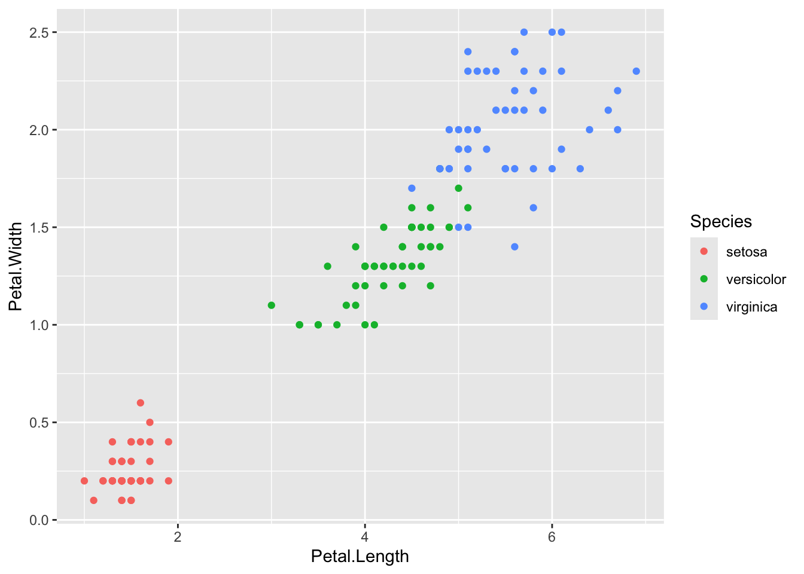
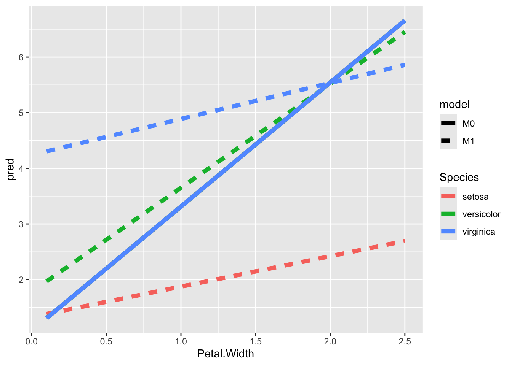
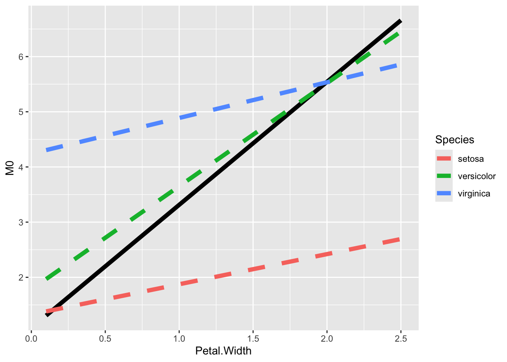
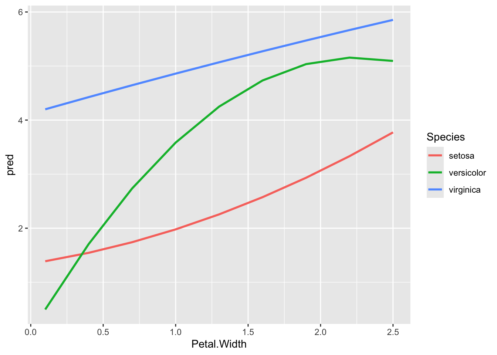

library( tidyverse )
library( modelr )16 Prediction and Plotting
17 Overview
To make nice plots from funky, curved models, the easiest way is to use the model to predict values for different covariate combinations, store all of this in a dataframe, and then use ggplot to plot your results using geom_line which will give you nice smoothed curves through the points.
This document hilites some useful methods for doing this. See R for DS 23.3. We need the tidyverse and the modelr package:
17.1 Some important functions
Some important functions are: add_predictions() and add_residuals()
Also see gather_pred() to compare models.
Here is an example using the iris dataset
head(iris) Sepal.Length Sepal.Width Petal.Length Petal.Width Species
1 5.1 3.5 1.4 0.2 setosa
2 4.9 3.0 1.4 0.2 setosa
3 4.7 3.2 1.3 0.2 setosa
4 4.6 3.1 1.5 0.2 setosa
5 5.0 3.6 1.4 0.2 setosa
6 5.4 3.9 1.7 0.4 setosaggplot( iris, aes( x = Petal.Length, y = Petal.Width, col=Species ) ) +
geom_point()
Let’s fit a simple linear model ignoring species
M0 = lm( Petal.Length ~ Petal.Width, data=iris )
summary( M0 )
Call:
lm(formula = Petal.Length ~ Petal.Width, data = iris)
Residuals:
Min 1Q Median 3Q Max
-1.33542 -0.30347 -0.02955 0.25776 1.39453
Coefficients:
Estimate Std. Error t value Pr(>|t|)
(Intercept) 1.08356 0.07297 14.85 <2e-16 ***
Petal.Width 2.22994 0.05140 43.39 <2e-16 ***
---
Signif. codes: 0 '***' 0.001 '**' 0.01 '*' 0.05 '.' 0.1 ' ' 1
Residual standard error: 0.4782 on 148 degrees of freedom
Multiple R-squared: 0.9271, Adjusted R-squared: 0.9266
F-statistic: 1882 on 1 and 148 DF, p-value: < 2.2e-16Let’s fit a linear model with a species interaction:
M1 = lm( Petal.Length ~ Petal.Width * Species, data=iris )
summary( M1 )
Call:
lm(formula = Petal.Length ~ Petal.Width * Species, data = iris)
Residuals:
Min 1Q Median 3Q Max
-0.84099 -0.19343 -0.03686 0.16314 1.17065
Coefficients:
Estimate Std. Error t value Pr(>|t|)
(Intercept) 1.3276 0.1309 10.139 < 2e-16 ***
Petal.Width 0.5465 0.4900 1.115 0.2666
Speciesversicolor 0.4537 0.3737 1.214 0.2267
Speciesvirginica 2.9131 0.4060 7.175 3.53e-11 ***
Petal.Width:Speciesversicolor 1.3228 0.5552 2.382 0.0185 *
Petal.Width:Speciesvirginica 0.1008 0.5248 0.192 0.8480
---
Signif. codes: 0 '***' 0.001 '**' 0.01 '*' 0.05 '.' 0.1 ' ' 1
Residual standard error: 0.3615 on 144 degrees of freedom
Multiple R-squared: 0.9595, Adjusted R-squared: 0.9581
F-statistic: 681.9 on 5 and 144 DF, p-value: < 2.2e-16Now let’s add some predictions to our original data:
my.iris = iris
my.iris = add_predictions(iris, M1 )
head( my.iris ) Sepal.Length Sepal.Width Petal.Length Petal.Width Species pred
1 5.1 3.5 1.4 0.2 setosa 1.436861
2 4.9 3.0 1.4 0.2 setosa 1.436861
3 4.7 3.2 1.3 0.2 setosa 1.436861
4 4.6 3.1 1.5 0.2 setosa 1.436861
5 5.0 3.6 1.4 0.2 setosa 1.436861
6 5.4 3.9 1.7 0.4 setosa 1.54616017.2 More on the model matrix
See model_matrix, a slightly better version of model.matrix in that it gives you a tibble rather than a matrix, so it is easier to deal with.
model_matrix( Petal.Length ~ Petal.Width * Species, data=iris )# A tibble: 150 × 6
`(Intercept)` Petal.Width Speciesversicolor Speciesvirginica
<dbl> <dbl> <dbl> <dbl>
1 1 0.2 0 0
2 1 0.2 0 0
3 1 0.2 0 0
4 1 0.2 0 0
5 1 0.2 0 0
6 1 0.4 0 0
7 1 0.3 0 0
8 1 0.2 0 0
9 1 0.2 0 0
10 1 0.1 0 0
# ℹ 140 more rows
# ℹ 2 more variables: `Petal.Width:Speciesversicolor` <dbl>,
# `Petal.Width:Speciesvirginica` <dbl>17.3 data_grid()
This function, in the modelr package, given a dataframe, will generate a simple dataframe with one row for each possible combination of variables you want:
library( modelr )
my.df = data.frame( A=c(1,2,1,2), B=c(10,20,20,20), C=c(10,20,30,40) )
data_grid( my.df, A, B )# A tibble: 4 × 2
A B
<dbl> <dbl>
1 1 10
2 1 20
3 2 10
4 2 20You can also get “typical values” (usually the median or most commonly occuring) for things not on your grid using a modeling argument:
mod <- lm(Petal.Length ~ Petal.Width * Species, data=iris)
data_grid(iris, .model = mod)# A tibble: 3 × 2
Petal.Width Species
<dbl> <chr>
1 1.3 setosa
2 1.3 versicolor
3 1.3 virginica data_grid(iris, Petal.Width = seq_range(Petal.Width, 9), .model = mod)# A tibble: 27 × 2
Petal.Width Species
<dbl> <chr>
1 0.1 setosa
2 0.1 versicolor
3 0.1 virginica
4 0.4 setosa
5 0.4 versicolor
6 0.4 virginica
7 0.7 setosa
8 0.7 versicolor
9 0.7 virginica
10 1 setosa
# ℹ 17 more rowsSimilar is seq_range() that gives you a nice sequence of numbers over a range of values
X = rnorm( 10000 )
seq_range( X, 5 )[1] -3.5462550 -1.7115377 0.1231796 1.9578970 3.7926143# drop 5% of data on tails
seq_range( X, 5, trim=0.05 )[1] -1.942936548 -0.967505121 0.007926305 0.983357732 1.958789159# use pretty numbers
seq_range( X, 5, trim=0.05, pretty=TRUE )[1] -2 -1 0 1 2You can combine with data_grid to get a nice data frame of points to use for your “canonical points” for prediction or whatnot:
my.df = data.frame( A=rnorm(1000), B=rexp(1000), C=rnorm(1000,mean=5) )
data_grid( my.df,
A=seq_range(A,n=3),
B=seq_range(B,n=3) )# A tibble: 9 × 2
A B
<dbl> <dbl>
1 -3.65 0.00181
2 -3.65 4.07
3 -3.65 8.14
4 -0.367 0.00181
5 -0.367 4.07
6 -0.367 8.14
7 2.92 0.00181
8 2.92 4.07
9 2.92 8.14 18 Plotting
The above is useful for plotting:
grid = data_grid(iris, Petal.Width = seq_range(Petal.Width, 9), .model = mod)
grid2 = add_predictions(grid, M1, "M1" )
grid2 = add_predictions(grid2, M0, "M0" )
head( grid2 )# A tibble: 6 × 4
Petal.Width Species M1 M0
<dbl> <chr> <dbl> <dbl>
1 0.1 setosa 1.38 1.31
2 0.1 versicolor 1.97 1.31
3 0.1 virginica 4.31 1.31
4 0.4 setosa 1.55 1.98
5 0.4 versicolor 2.53 1.98
6 0.4 virginica 4.50 1.98# more simply done with this
grid2 = spread_predictions( grid, M0, M1 )
head( grid2 )# A tibble: 6 × 4
Petal.Width Species M0 M1
<dbl> <chr> <dbl> <dbl>
1 0.1 setosa 1.31 1.38
2 0.1 versicolor 1.31 1.97
3 0.1 virginica 1.31 4.31
4 0.4 setosa 1.98 1.55
5 0.4 versicolor 1.98 2.53
6 0.4 virginica 1.98 4.50# but for plotting, we want long form
grid2 = gather_predictions( grid, M0, M1 )
head( grid2 )# A tibble: 6 × 4
model Petal.Width Species pred
<chr> <dbl> <chr> <dbl>
1 M0 0.1 setosa 1.31
2 M0 0.1 versicolor 1.31
3 M0 0.1 virginica 1.31
4 M0 0.4 setosa 1.98
5 M0 0.4 versicolor 1.98
6 M0 0.4 virginica 1.98Ok, now let’s plot:
ggplot( grid2, aes(x= Petal.Width, y= pred, col=Species, lty=model ) ) +
geom_line(lwd=2)
Note that our plot is not perfect: the three lines for the three M0 species predictions are all the same and thus we see only blue (the green and red get blotted out). We could get fancy:
grid2 = spread_predictions( grid, M0, M1 )
head( grid2 )# A tibble: 6 × 4
Petal.Width Species M0 M1
<dbl> <chr> <dbl> <dbl>
1 0.1 setosa 1.31 1.38
2 0.1 versicolor 1.31 1.97
3 0.1 virginica 1.31 4.31
4 0.4 setosa 1.98 1.55
5 0.4 versicolor 1.98 2.53
6 0.4 virginica 1.98 4.50ggplot( grid2, aes(x= Petal.Width ) ) +
geom_line( aes( y=M0 ), col="black", lwd=2 ) +
geom_line( aes( y=M1, col=Species ), lwd=2, lty=2 )
18.1 Bonus: Interactions and curved lines
The above generalizes. Let’s add a quadratic model:
M2 = lm( Petal.Length ~ (Petal.Width + I(Petal.Width^2)) * Species, data=iris )
grid2 = add_predictions( grid, M2 )
ggplot( grid2, aes(x= Petal.Width, y= pred, col=Species ) ) +
geom_line( lwd=1)